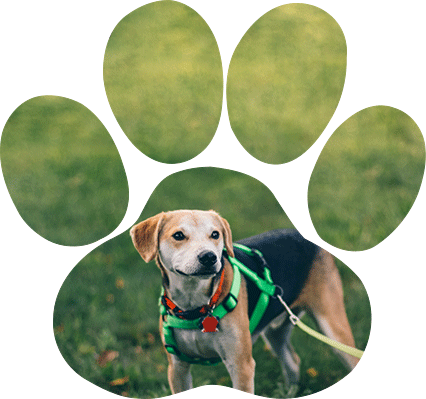

Bumper is one special dude! He has limited vision, most likely born with vision impairment but that does not stop him from having a great time and loving every day. He has a goofy personality and is determined to make everyone his friend. He is about 1 year old and weighs about 65lbs. Bumper is a very happy dog and truly has a zest for life no matter what each day throws his way. He is a lab mix, a handsome guy for sure and he knows it. His front legs are a little shorter than his rear which makes for an uneven gate but that only adds to his character. Bumper is good in his crate, he does best in a familiar environment and once he knows his territory, gets around just fine. He plays hard with other dogs and is a good playmate for bigger dogs who donât mind wrestling with a big goof ball. If you are looking for a good time, call Bumper! He is always ready to make a new friend and you will not be sorry. If interested in meeting Bumper, please email an adoption request to Saving Grace. He is available for an adoption fee of $350 that includes his vaccines, microchip, neuter and monthly preventatives. Bumper is always the life of the party and is ready to bring his happiness to your home!